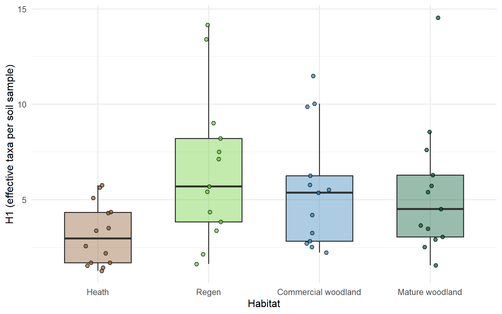
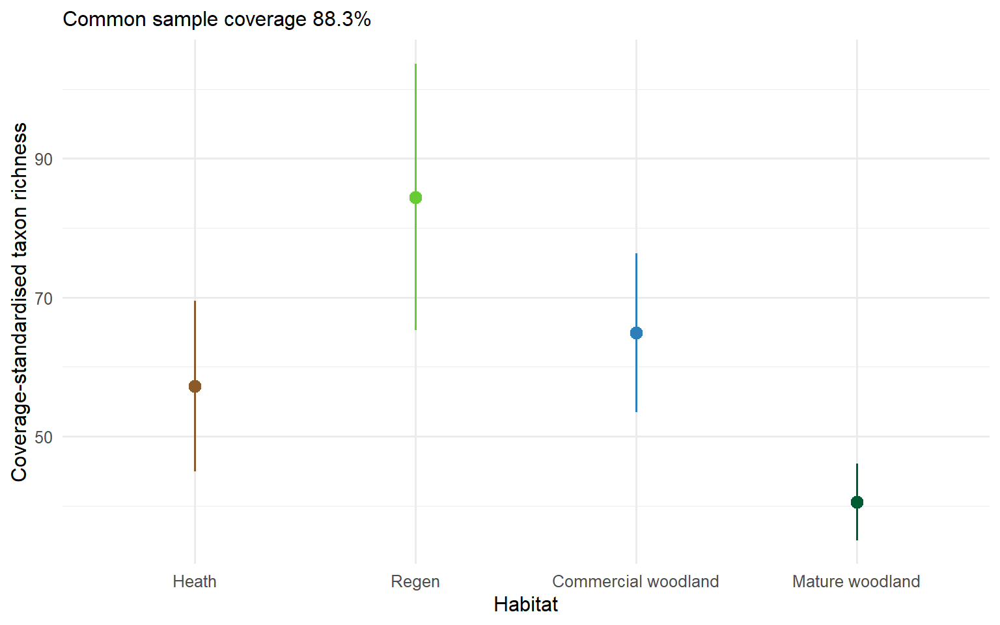
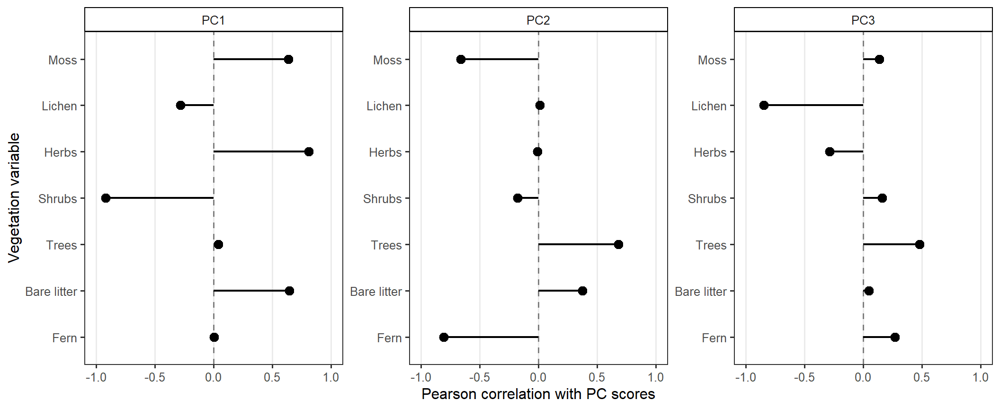
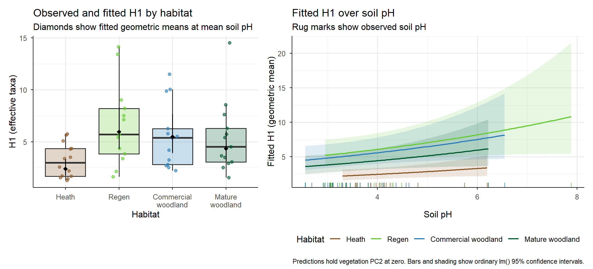

2. Calculate diversity indices
The value of using eDNA metabarcoding lies in its ability to cover a
wide taxonomic range. However, this also creates a challenge. Data from
100s of taxa can be difficult to handle. Data such as this where we want
to explain and understand changes in multiple measured variables (each
individual taxa) as a function of covariates are referred to as
multivariate data. In contraposition to univariate where we have a
single variable of interest that we wish to explain (e.g., temperature
as a function of time of the day). There are broadly two paths that can
be followed, summarising multivariate data into univariate datasets
through quantities of interest, like number of taxa (richness) or
diversity (abundance-weighted richness) and explain changes in those or
use multivariate methods of analysis. Here, we will focus on the former,
and session 2 and 3 will cover the latter.
We will focus on two summary metrics, taxon richness, and Hill number
of order 1 \(H_1\), but there are many
that can be used, which provide different information from your data. If
you are interested in this topic, I recommend chapter 13 of Ecological
Methodology by Charles Krebs.
Taxonomic richness is straigh forward, the number of unique taxa in a
sample. \(H_1\) we estimate by
exponentiating the Shannon-Wienner Index (SWI). The reason we do this,
instead of using SWI directly, is because it measures our ability to
predict the identity of a taxa drawn at random from the pool of species
available (in a sample) in units of bits, more evenly abundant taxa
reduce our ability to predict, which is difficult to interpret in
ecological terms. Exponentiating the Shannon–Wiener index gives the
effective number of taxa. This is the number of taxa that would give the
same diversity if the reads were distributed evenly among them, which is
more readily interpretable.
Here, we use the relative frequencies of the retained reads to
calculate \(H_1\). DNA extraction,
amplification and other steps in the workflow can affect those
frequencies, so the values describe the relative read distribution wthin
a sample, not absolute abundances.
# Calculate one set of diversity indices per soil sample
div_cc <- tibble(sample_id = rownames(comm), richness = specnumber(comm),
shannon = diversity(comm, index = "shannon"), hill1 = exp(shannon)) %>%
inner_join(metadata, by = "sample_id", relationship = "one-to-one", unmatched = "error")
# Print summary
div_cc %>%
group_by(treatment) %>%
summarise(mean_richness = mean(richness), mean_hill1 = mean(hill1), .groups = "drop") %>%
kable(digits = 1, col.names = c("Habitat", "Mean richness", "Mean H1"),
caption = "Mean diversity within soil samples by habitat")
Mean diversity within soil samples by habitat
| heath |
14.7 |
3.2 |
| regen |
23.5 |
6.6 |
| com_wood |
22.5 |
5.5 |
| mat_wood |
19.6 |
5.4 |
See the short and long reports
for a more in-depth interpretation of results. Briefly, we find that
regen and commercial woodland, have the highest richness and \(H_1\), with mature woodland close behind,
while heath has the lowest richness and diversity. Interestingly, the
effective number of species is substantially lower than richness,
indicating that few taxa typically dominate a sample.
We can also visualise these with ggplot. This package is
highly versatile and a staple in data explorations. Here is
the official introduction to learn how it works.
ggplot(div_cc, aes(treatment, hill1, fill = treatment)) +
geom_boxplot(width = 0.6, alpha = 0.4, outlier.shape = NA) +
geom_point(position = position_jitter(width = 0.12, height = 0, seed = 123),
shape = 21, size = 2, alpha = 0.7) +
scale_x_discrete(labels = habitat_labels) +
scale_fill_manual(values = habitat_colours) +
labs(x = "Habitat", y = "H1 (effective taxa per soil sample)") +
theme_minimal(base_size = 12) +
theme(legend.position = "none")

Compare habitat richness at a common coverage
In session 0, we used iNEXT to assess the whether the
sampling effort was sufficient. We saw that ca. 15 samples per habitat,
the curves had not flattened. More importantly, the different habitats
had different slopes (inclination of the curve), which would prevent
comparison of habitat-level richness. iNEXT also provides a
tool to overcome this by estimating a quantity called coverage.
Briefly, it is estimated as an adjusted ratio of the number of taxa that
appear in a single sample or in two samples relative to the total number
of taxa, and it provides information on the proportion of seen versus
unseen taxa. We can then use this to correct richness across habitats at
the same level of coverage.
Prepare incidence frequencies
We use the saved presence–absence table to repeat the calculation
from Session 0. For each habitat, iNEXT needs the total
number of soil samples followed by the number of samples in which each
detected taxon occurs. A taxon contributes at most one detection per
sample.
# Count detections by habitat, then put the sample total first
incidence <- comm_pa %>%
inner_join(select(metadata, sample_id, treatment), by = "sample_id",
relationship = "one-to-one", unmatched = "error") %>%
group_by(treatment) %>%
summarise(across(-sample_id, sum), .groups = "drop") %>%
pivot_longer(-treatment, names_to = "taxon", values_to = "frequency") %>%
filter(frequency > 0)
incidence <- bind_rows(count(metadata, treatment, name = "frequency"), incidence)
inext_input <- split(incidence$frequency, incidence$treatment, drop = TRUE)
Standardise richness by coverage
Using in-built functions of the iNEXT package, we can
extract the sample coverage per habitat (SC), then
“manually” choose a value just below the lowest reported coverage, and
feed the data and the chosen coverage to another function
estimateD to estimate taxon richness (q = 0)
at said coverage.
coverage_info <- DataInfo(inext_input, datatype = "incidence_freq")
coverage_info %>%
select(Assemblage, T, S.obs, SC) %>%
kable(digits = 4, col.names = c("Habitat", "Soil samples", "Observed richness", "Coverage"))
| heath |
14 |
58 |
0.8870 |
| regen |
13 |
85 |
0.8843 |
| com_wood |
13 |
74 |
0.9100 |
| mat_wood |
13 |
53 |
0.9449 |
target_coverage <- min(coverage_info$SC) - 0.001
set.seed(123)
richness_at_coverage <- estimateD(inext_input, q = 0, datatype = "incidence_freq",
base = "coverage", level = target_coverage, nboot = 100) %>%
mutate(treatment = factor(Assemblage, levels = habitat_levels),
coverage = SC, method = Method, richness = qD,
lower_95 = qD.LCL, upper_95 = qD.UCL, .keep = "none")
kable(richness_at_coverage, digits = 3)
| heath |
0.883 |
Rarefaction |
57.211 |
44.907 |
69.516 |
| regen |
0.883 |
Rarefaction |
84.456 |
65.283 |
103.628 |
| com_wood |
0.883 |
Rarefaction |
64.891 |
53.448 |
76.335 |
| mat_wood |
0.883 |
Rarefaction |
40.548 |
35.050 |
46.046 |
And visually.
ggplot(richness_at_coverage, aes(treatment, richness)) +
geom_pointrange(aes(ymin = lower_95, ymax = upper_95, colour = treatment)) +
scale_x_discrete(labels = habitat_labels) +
scale_colour_manual(values = habitat_colours) +
labs(x = "Habitat", y = "Coverage-standardised taxon richness",
subtitle = sprintf("Common sample coverage %.1f%%", 100 * target_coverage)) +
theme_minimal(base_size = 12) +
theme(legend.position = "none")

The pattern largely agrees with that of the effective number of
species, only the differences among habitats are more marked, especially
the extremes of regen and mature woodland. The contrast between the two
metrics, suggests that richness patterns are drive by numerous but low
read taxa.
Because we have summarised our multivariate data, into a single
covariate (e.g., effective number of species), we can use well
established methods to analyse these, namely, linear regression. Below,
we go through an example.
3. Linear Regression
We will reproduce a standard approach to linear regression, fitting a
global model with all covariates of interest, using AIC to select the
most parsimonious model, validating model assumption, and finally make
and visualise predictions.
There is much literature on the topic of linear regression, which we
will not cover here. Two classic reads by Alain Zuur are: A protocol for
data exploration and A protocol for conducting
and presenting results of regression-type analyses.
For our next step, we need to choose the relevant type of regression,
which depends on the type of data we are analysing. We are using the
effective number of species (\(H_1\)),
which we might think is count data, which would fit a poisson
regression. However, because we obtained \(H_1\) as the exponential of SWI, the
numbers are not integers (i.e., they have decimals), which a poisson
model is not well equipped to handle. We could fit \(H_1\) in a linear regression assuming a
normal distribution, but in this instance, we will use the original SWI,
and later backtransform our estimates back to the \(H_1\) scale. This is typically done with
data to better approximate the assumption of normality of the residuals
that linear regression have. However, this is a special case because
both scales have a clear interpretation. The SWI measures uncertainty
about the taxon identity of a randomly selected read, while \(H_1\) expresses the same diversity as an
effective number of taxa.
Prepare the model data
In the linear regression world, we are no longer dealing with
community matrices, here we use long datasets, with one row per sample,
and response and explanatory variables as columns. We work out of the
div_cc we created earlier.
We also transform our numeric covariates of temperature, pH, and
moisture. We center them. For instance, we take all of our measurements
of pH across the dataset, and estimate the average. Then, for each
individual pH measurement, we substract the mean, such that values that
are exactly average become zero, values above average are positive, and
values below average are negative. There are several reasons to do this.
It increases numerical stability of the models, which roughly translates
to: the machines running these models are happier with centred data, but
it also improves interpretation of the outputs, because our estimates
will be for pH/temperature/moisutre = 0, which now happens to be the
average rather than some non-existent ultra acidic, dry, and near
freezing value.
# List vegetation covariates
veg_vars <- intersect(c("moss", "lichen", "herbs", "shrubs",
"trees", "bare_litter", "rocky", "fern"), names(div_cc))
# Subset relevant variables, drop missing values, estimate log(hill1) and centre soil variables
cc_mod <- div_cc %>%
select(site_id, treatment, hill1, ph, moisture, temp, all_of(veg_vars)) %>%
drop_na() %>%
mutate(treatment = droplevels(treatment), log_hill1 = log(hill1),
across(c(ph, moisture, temp), ~ .x - mean(.x), .names = "{.col}_c"))
# Print summary
cc_mod %>%
group_by(treatment) %>%
summarise(soil_samples = n(), field_sites = n_distinct(site_id),
min_ph = min(ph), max_ph = max(ph), .groups = "drop") %>%
kable(digits = 2, caption = "Sample sizes and pH ranges for the regression")
Sample sizes and pH ranges for the regression
| heath |
14 |
5 |
3.30 |
6.20 |
| regen |
13 |
5 |
2.95 |
7.88 |
| com_wood |
13 |
5 |
2.55 |
6.55 |
| mat_wood |
13 |
5 |
2.55 |
6.22 |
We are running one more set of data transformations before fitting
our models. We collected vegetation data at each site as a percentage
cover. While it was collected in a way that different types can overlap,
e.g., mosses and lichen underneath shrubs, and thus they do not add up
to 100%, they can still have some level of complementarity. That is, if
you have 90% herbaceous cover, you likely will have small shrub cover,
and viceversa. This means one variable contains information on the
other, which confounds the effects of the different types of
vegetation.
There are several ways to overcome this problem. Here, we will feed
our vegetation data into Principal Component Analysis (PCA), and then
extract the scores (i.e., axis) of the three main PC’s. The advantage of
this, is that the effects of the vegetation are contained in the scores,
yet each set of scores is independent of the other, hence circumventing
the complementarity issue.
# Select vegetation covariates
veg <- cc_mod %>%
select(all_of(veg_vars)) %>%
select(where(~ isTRUE(sd(.x) > 0)))
# Fit PCA and extract three main axis
veg_pca <- prcomp(veg, center = TRUE, scale. = TRUE)
veg_scores <- as_tibble(veg_pca$x) %>%
select(veg_PC1 = PC1, veg_PC2 = PC2, veg_PC3 = PC3)
# Bind back to data
cc_mod <- bind_cols(cc_mod, veg_scores)
While the individual effect of our covariates will be “lost” in these
axis, we can explore how each vegetation type relates to the PCA scores.
Here, we correlate each individual variable to each of the three
scores.
# Correlate vegetation variables to PC scores and format
veg_pc_cor <- cor(veg, veg_scores) %>%
as_tibble(rownames = "vegetation") %>%
pivot_longer(-vegetation, names_to = "component", values_to = "correlation") %>%
mutate(component = str_remove(component, "^veg_"))
# Plot correlations
p_veg_cor <- ggplot(veg_pc_cor, aes(correlation, vegetation)) +
geom_vline(xintercept = 0, linetype = "dashed", colour = "grey50") +
geom_segment(aes(x = 0, xend = correlation, yend = vegetation), linewidth = 0.8) +
geom_point(size = 3) +
facet_wrap(~ component, nrow = 1, axes = "all_y") +
scale_x_continuous(limits = c(-1, 1), breaks = seq(-1, 1, by = 0.5)) +
scale_y_discrete(limits = rev(names(veg)),
labels = ~ str_to_sentence(str_replace_all(.x, "_", " "))) +
labs(x = "Pearson correlation with PC scores", y = "Vegetation variable") +
theme_bw(base_size = 12) +
theme(panel.grid.major.y = element_blank(), panel.grid.minor = element_blank(),
strip.background = element_rect(fill = "white", colour = "black"))
p_veg_cor

These can then be used to interpret back the effects of each score if
they are retained in our final model.
Fit the global model
The global model includes habitat type, the three vegetation PCs, and
centred soil pH, moisture and temperature. The interactions allow each
soil relationship to differ among habitats. For example,
treatment * ph_c includes habitat, pH and their
interaction.
# Fit global model on log_hill1
global_h1 <- lm(log_hill1 ~ veg_PC1 + veg_PC2 + veg_PC3 +
treatment * (ph_c + moisture_c + temp_c),
data = cc_mod, na.action = na.fail)
Find the “best” model
When using linear regression, and generally most statistical
analysis, there is a tension between how many questions we want to
answer with the data, and how much information the data holds to answer
those questions. If we try to ask too many questions, i.e., fit lots of
variables into the model, we risk overfitting the model, which can make
it fail. To navigate this, we can use what’s called information
criteria, the most well-known being Aikaike’s Information Criteria
(AIC), which will help us identify the most parsimonious model to
explain changes in our response variable, i.e., keep only variables that
have genuine explanatory power over our response variable.
We use the function dredge from the package
MuMIn to automate this, and explore all the models that are
within 2 AIC points of each other, a rule of thumb threshold below which
we assume we cannot discern between models.
# Compare models through AIC with dredge
model_selection <- dredge(global_h1, rank = "AICc", fixed = "treatment") # We fix treatment as a covariate that must be in all models, given it is our desgin covariate
# Select the top ranked models
subset(model_selection, delta <= 2)
## Global model call: lm(formula = log_hill1 ~ veg_PC1 + veg_PC2 + veg_PC3 + treatment *
## (ph_c + moisture_c + temp_c), data = cc_mod, na.action = na.fail)
## ---
## Model selection table
## (Int) mst_c ph_c trt veg_PC1 veg_PC2 df logLik AICc delta weight
## 19 0.8714 0.14880 + -0.1384 7 -41.252 99.0 0.00 0.163
## 9 1.0270 + 0.12690 6 -42.661 99.1 0.15 0.151
## 25 0.9484 + 0.11370 -0.1083 7 -41.459 99.4 0.41 0.133
## 18 1.0780 -0.010460 + -0.1518 7 -41.791 100.1 1.08 0.095
## 27 0.8997 0.10960 + 0.07801 -0.1224 8 -40.496 100.3 1.27 0.086
## 3 0.9747 0.13730 + 6 -43.230 100.3 1.29 0.085
## 17 0.9295 + -0.1274 6 -43.275 100.4 1.38 0.082
## 11 0.9955 0.08904 + 0.09922 7 -42.044 100.6 1.58 0.074
## 26 1.0530 -0.007687 + 0.09092 -0.1300 8 -40.689 100.7 1.66 0.071
## 1 1.0210 + 5 -44.850 101.0 1.98 0.060
## Models ranked by AICc(x)
There are 10 models within 2 AIC points of the best model (i.e.,
lowest AIC). The table gives is each model as a row, then the columns
represent terms in the model, the intercept, moisture and pH, our
treatment (habitat type), first and second vegetation PCs, and then the
number of degrees of freedom used by the model (how many parameters it
is estimating). We can also see the AIC, the delta (difference to the
next one), and the relative weight of each model within this set.
We can already see that soil temperature was never retained in the
top models, nor was veg_PC3. The remaining variables are retained in
some but not others. No interactions have been retained either.
Given the number of “best” models, we need to choose which one to use
to learn about our system. We might choose the top one, but that would
dismiss two variables that are also picked up by the other top models.
Another approach, sometimes frowned upon, is model averaging. In
essence, average the covariate effects across models, which can be done
conditionally or not. When done conditionally, effects are only averaged
across models that have it, unconditionally, if the covariate is missing
from one of the models, it counts as a zero towards the average. Then
you might want to explore differences among the two averages.
For the purposes of simplicity of explanation and code, we will
proceed with the top model that includes treatment, pH, and veg_PC2.
Though this would be inadvisable with these results.
Is the best model any good?
We have chosen our best model. But before we use it to learn about
our system, we must check whether it is any good at all. How do we do
this? We check the model’s assumptions. What are the model
assumptions?
The model’s assumptions are a series of conditions that the data, the
experimental design, and the model structure (namely the formula) must
meet, such that the statistical machinery underneath the hood can do a
good job and produce appropriate estimates.
The most obvious assumption is whether the data type of your response
is adequate for the type of model. For instance, if we had count data, a
gaussian (or normal) model would not be appropriate, and we should use a
poisson or a negative binomial model. There
are other assumptions that we need to meet, regarding the spread of the
data, the absence of outliers, but we wll not go into them.
There are several ways we can check these assumptions, for a classic
lm() we could simply run plot(model object)
and it would print several plots where we can evaluate of these
assumptions are met or not. This would not work with other types of
models e.g., glm(). Below I show a method that is equally
simple to implement, but that is far more versatile, and can be used
with more complex models using the package DHARMa. While it
is easy to implement, there a lot of machinery underneath making it
possible, but we will not go into it either.
# Selecting the best model
model_h1 <- get.models(model_selection, subset = 1)[[1]]
# Simulate residuals from model object, and plot validations
sim_h1 <- simulateResiduals(model_h1, n = 1000, seed = 123)
plot(sim_h1)

We are after a lack of red. Which we have. More specifically, on the
QQ-plot, we want the points (triangles) to sit more or less on the
diagonal line. There are also several statistical tests (KS, Dispersion,
and Outlier), which come up as not significant (n.s.). On the right, we
have the residuals vs model predictions, and here, we want our points to
be more or less randomly distributed around the median (0.5) with no
discernible pattern. DHARMa fits quantile regressions at the mediate,
and 25th and 75th quantiles, which we want to overlap with the dotted
lines.
Model Outputs
Now we have a parsimonious model (with caveats, see text in model
selection) that we can trust. Let’s look at the outputs.
# Printing the outputs
summary(model_h1)
##
## Call:
## lm(formula = log_hill1 ~ ph_c + veg_PC2 + 1 + treatment, data = cc_mod,
## na.action = na.fail)
##
## Residuals:
## Min 1Q Median 3Q Max
## -1.10289 -0.38141 -0.01854 0.39000 0.88049
##
## Coefficients:
## Estimate Std. Error t value Pr(>|t|)
## (Intercept) 0.87138 0.16116 5.407 2.1e-06 ***
## ph_c 0.14880 0.07706 1.931 0.059535 .
## veg_PC2 -0.13839 0.07252 -1.908 0.062475 .
## treatmentregen 0.91378 0.23976 3.811 0.000401 ***
## treatmentcom_wood 0.82860 0.24668 3.359 0.001559 **
## treatmentmat_wood 0.59645 0.22228 2.683 0.010033 *
## ---
## Signif. codes: 0 '***' 0.001 '**' 0.01 '*' 0.05 '.' 0.1 ' ' 1
##
## Residual standard error: 0.5596 on 47 degrees of freedom
## Multiple R-squared: 0.2835, Adjusted R-squared: 0.2073
## F-statistic: 3.72 on 5 and 47 DF, p-value: 0.006425
Here we have the typical output of a linear regression. It is divided
into four parts:
- Call: shows you the function used to fit the model, including the
formula and its variables.
- Residuals: tells you about the distribution of residuals. If you are
interested in learning more about residuals, check Zuur’s references
above. Briefly, there is at least one residual for each datapoint, which
is measured as the distance between said data point, and the prediction
of the model. Thus, it measures your residual variance, hence,
residuals. What you want to see is that the median is near zero, and
that the quantiles to either side are more or less symmetric, which they
are. We will come back to them.
- Coefficients: Here is where we learn about our system. There are a
few quirks that we must know to be able to draw inferences.
- Intercept: In the way that we have fitted the model, all estimates
are estimated relative to an intercept. the intercept is the value of
our response variable, log_hill1 (or SWI), when our numeric values are
zero (this is why it is valuable to centre your numeric variables), and
for the reference level of your factors, here, heath (the one that is
missing from the list). Thus, we have a SWI of 0.87 in heath at average
pH and PC2 values.
- Contrasts - Slopes: When we fit a numeric variable to a model, it
estimates a slope. A slope is a rate of change of the response variable
over the covariate. For instance, SWI is declining by 0.14 points for
every unit of increase of pH. The P value on the right hand side tells
us whether the slope is significantly different from zero. If it is
zero, the predicted line would be flat, and SWI would not change over
pH. Technically speaking, the p-value tells us the following: what is
the probability that we could obtain the data we have observed, IF the
slope was zero (null hypothesis). If the probability is small enough,
typically < 0.05 (5%), the null hypothesis is rejected, and we
conclude that there is a significant effect of our covariate.
There is much debate about whether p-values should be use or not, or at
least whether the arbitrary 0.05 threshold of significance should be
used. Here, we have two “border-line” (or marginal) significances for pH
and PC2, and strictly speaking, we could conclude no relationship. In
any case, p-values should not be assessed independently of the effect
sizes (i.e., the estimate).
- Contrasts - Factors: When we fit categorical variables, like habitat
type, the estimates are telling us about the difference between our
intercept (heath at pH and PC2 = 0), relative to the new level (e.g.,
regen also at pH and PC2 = 0). Such that SWI for regen is
0.87138+0.91378 = 1.78516. Here, the p-value is telling us,
whether the difference between the two levels we are contrasting is
significantly different from zero. The same technical definition I used
for slope applies here though. In our summary, we can see that all
wooded habitats have significantly higher SWI than heath. I will not go
into details about the t-value, it is part of the statistical machinery
that the model uses to derive the p-value.
- Std. Error and statistical frameworks: The standard error tells us
about the precision of our estimate, or how much the estimate would vary
if you were to repeat the study. It is used to estimate the confidence
interval, typically 95%. This also has a technical definition that is a
bit obscure: if you repeated your experiment an infinite number of
times, you would find that the estimates for each of them are within
your confidence interval, 95% of the time. Ultimately, it is telling us
about how confident we are about our estimates. The reason for these
obscures definitions is that we are using a Frequentist statistical
framework, which focuses on predictions of the future, as opposed to the
Bayesian framework, but this is beyond our scope.
- The rest: after the coefficient table, we have some additional
information about the model. The residual degrees of freedom tells us
how much information is left in the data after fitting the model, here
53 observations minus six estimated coefficients, 47 df left. Residual
standard error tells us about the scatter of our observations relative
to our model predictions. The R-square and adjusted R-square tell us
about the proportion of variance explained by the model. If the data
contains 100% of the variance, we can measure how much of it is
explained by our model, here 28%. The adjusted R-square corrects for the
fact that some covariates may overlap in the variance they explained,
e.g., veg_PC and habitat type. Lastly, we have an F-statistic, with
degree of freedom and a p-value. This is a contrast (using ANOVA) of our
fitted model, against an intercept-only model, which has no covariates.
This tells us whether our fitted covariates improve against a model that
fits a flat straight line through the data. Which in our case, they
do.
Nested structure of the data
Without going into much detail, we will cover the structure of the
data itself, because this is often necessary with noisy ecological data
such as this. Often, we might want opt for a design with sites, and
replicated sampling within a site. This imposes a structure on the data,
such that samples within a site may share a conditions that samples
between sites do not. This creates correlation among data points and
their residuals (the lack of which is one of the assumptions), in turn,
it overestimates the number of degrees of freedom because where the
datapoints are not correlated 1 data point = 1 d.f., if they are
correlated this is not true, we have less. Overestimated d.f. leads to
underestimates of standard errors, and ultimately to overconfident
estimates of effect sizes and statistical significance.
This can be addressed with random effects in mixed models, also
called hierarchical regression models. We have used hierarchical models
for our bacteria and fungal data but not for the invertebrate data
presented in this tutorial because the data did not allow it. For an
introduction to hierarchical models see Brown’s tutorial using the
lme4 package. Chapter
3 of Grimm, Ram, and Estabrook’s Growth Modelling provides worked
examples across a range of R packages.
Nonetheless, we want to acknowledge the structure of the data, and
correct our measures of confidence. We use a post-hoc correction with
the ClubSandwich package to apply a cluster-robust variance
estimator and a Satterthwaite correction of degrees of freedom, and
extract the coefficient table again.
# Cluster-robust variance estimation
site_vcov <- vcovCR(model_h1, cluster = cc_mod$site_id, type = "CR2")
# Coefficient table with df correction
coef_test(model_h1, vcov = site_vcov, test = "Satterthwaite")
## Alternative hypothesis: two-sided
## Coef. Estimate SE Null value t-stat d.f. (Satt) p-val (Satt)
## (Intercept) 0.871 0.0892 0 9.77 4.63 < 0.001
## ph_c 0.149 0.0543 0 2.74 5.39 0.03757
## veg_PC2 -0.138 0.0830 0 -1.67 2.35 0.21835
## treatmentregen 0.914 0.1965 0 4.65 7.70 0.00182
## treatmentcom_wood 0.829 0.1884 0 4.40 8.10 0.00222
## treatmentmat_wood 0.596 0.1610 0 3.71 7.33 0.00701
## Sig.
## ***
## *
##
## **
## **
## **
The most notable changes are the loss of marginal significance of
veg_PC2, while pH has gone over the 0.05 threshold to statistical
significance. This likely responds to the fact that vegetation was only
measured at site level, while pH was measured at sample level, hence
veg_PC2 would suffer most from a correction of nested data. Moreover,
much of the variation in vegetation is likely soaked by the habitat type
variable, which remains statistically significant, with estimates in
line with our previous table, i.e., they are robust estimates.
Visual outputs
Once we are confident in the robustness of our coefficients, and our
statistical significances. We might want to produce more reader-friendly
outputs in the form of visual plots.
We do this by creating a “new” dataset over which we make
predictions. This new dataset is a dummy dataset with the values of our
covariates over which we want to predict, in our case, habitat type and
pH, we will not predict over veg_PC2 since we saw in the previous
section it was not significant when correcting for the nested structure
of the data.
# Predict over the observed pH range in each habitat
new_habitat <- cc_mod %>%
reframe(ph_c = seq(min(ph_c), max(ph_c), length.out = 100),
.by = treatment) %>%
mutate(veg_PC2 = 0)
pred_log <- predict(model_h1, newdata = new_habitat, interval = "confidence")
pred_habitat <- bind_cols(new_habitat, as_tibble(pred_log)) %>%
mutate(ph = ph_c + mean(cc_mod$ph),
hill1 = exp(fit), lower_95 = exp(lwr), upper_95 = exp(upr))
# Predict habitat means at the same pH
new_at_mean <- cc_mod %>%
distinct(treatment) %>%
arrange(treatment) %>%
mutate(ph_c = 0, veg_PC2 = 0)
pred_at_mean_log <- predict(model_h1, newdata = new_at_mean, interval = "confidence")
# Note that we backtransform fit (SWI) back to Hill1
pred_at_mean <- bind_cols(new_at_mean, as_tibble(pred_at_mean_log)) %>%
mutate(hill1 = exp(fit), lower_95 = exp(lwr), upper_95 = exp(upr))
By using predict, we are not implementing the correction for the
nested structure of the data. Doing so requires more involved coding,
which, in this case, does not affect the output substantially, hence we
are reproducing the most commonly used approach with the
predict() function.
h1_theme <- theme_minimal(base_size = 12) +
theme(axis.line = element_line(colour = "black", linewidth = 0.4),
axis.ticks = element_line(colour = "black", linewidth = 0.4))
# Observed H1 and fitted habitat means ----
p_habitat <- ggplot(cc_mod, aes(treatment, hill1)) +
geom_boxplot(aes(fill = treatment), alpha = 0.25, outlier.shape = NA) +
geom_point(aes(colour = treatment), alpha = 0.6, size = 1.8,
position = position_jitter(width = 0.12, height = 0, seed = 123)) +
geom_pointrange(data = pred_at_mean, aes(ymin = lower_95, ymax = upper_95),
shape = 18, colour = "black") +
scale_x_discrete(labels = ~ str_wrap(habitat_labels[.x], width = 12)) +
scale_colour_manual(values = habitat_colours) +
scale_fill_manual(values = habitat_colours) +
labs(x = "Habitat", y = "H1 (effective taxa)",
title = "Observed and fitted H1 by habitat",
subtitle = "Diamonds show fitted geometric means at mean soil pH") +
h1_theme +
theme(legend.position = "none")
# Fitted H1 over soil pH with observed pH values ----
p_ph <- ggplot(pred_habitat, aes(ph, hill1, colour = treatment)) +
geom_ribbon(aes(ymin = lower_95, ymax = upper_95, fill = treatment),
alpha = 0.15, colour = NA) +
geom_line(linewidth = 0.8) +
geom_rug(data = cc_mod, aes(x = ph, colour = treatment),
sides = "b", alpha = 0.6, inherit.aes = FALSE) +
scale_colour_manual(values = habitat_colours, labels = habitat_labels) +
scale_fill_manual(values = habitat_colours, guide = "none") +
labs(x = "Soil pH", y = "Fitted H1 (geometric mean)", colour = "Habitat",
title = "Fitted H1 over soil pH",
subtitle = "Rug marks show observed soil pH") +
h1_theme +
theme(legend.position = "bottom")
(p_habitat | p_ph) +
plot_layout(widths = c(1, 1.3)) +
plot_annotation(
caption = "Predictions hold vegetation PC2 at zero. Bars and shading show ordinary lm() 95% confidence intervals.")

The panel on the left should look familiar, it is very similar to the
exploration of the raw data, only now we have the statistical test
telling us what constitutes a significant difference or not. We are also
able to extract the differences. On the right, we find a modest effect
of pH on H1. The effect seems largely driven by a few pH values at pH
> 5.
This completes our univariate analysis of eDNA data, where we have
summarised a diverse community of invertebrates into a single metric (a
2 in 1 in ths case) of SWI and H1. In Session
2, we will explore a multivariate analysis of community composition
using fungi.
Software versions
## R version 4.6.2 (2026-10-29 ucrt)
## Platform: x86_64-w64-mingw32/x64
## Running under: Windows 11 x64 (build 26300)
##
## Matrix products: default
## LAPACK version 3.12.1
##
## locale:
## [1] LC_COLLATE=English_United Kingdom.utf8
## [2] LC_CTYPE=English_United Kingdom.utf8
## [3] LC_MONETARY=English_United Kingdom.utf8
## [4] LC_NUMERIC=C
## [5] LC_TIME=English_United Kingdom.utf8
##
## time zone: Europe/London
## tzcode source: internal
##
## attached base packages:
## [1] stats graphics grDevices utils datasets methods base
##
## other attached packages:
## [1] patchwork_1.3.2 clubSandwich_0.7.0 MuMIn_1.48.19 DHARMa_0.4.7
## [5] knitr_1.51 iNEXT_3.0.2 vegan_2.7-3 permute_0.9-10
## [9] lubridate_1.9.5 forcats_1.0.1 stringr_1.6.0 dplyr_1.2.1
## [13] purrr_1.2.2 readr_2.2.0 tidyr_1.3.2 tibble_3.3.1
## [17] ggplot2_4.0.3 tidyverse_2.0.0 here_1.0.2
##
## loaded via a namespace (and not attached):
## [1] tidyselect_1.2.1 farver_2.1.2 S7_0.2.2 fastmap_1.2.0
## [5] promises_1.5.0 digest_0.6.39 mime_0.13 timechange_0.4.0
## [9] lifecycle_1.0.5 cluster_2.1.8.3 magrittr_2.0.5 compiler_4.6.2
## [13] rlang_1.2.0 sass_0.4.10 tools_4.6.2 yaml_2.3.12
## [17] labeling_0.4.3 bit_4.6.0 plyr_1.8.9 RColorBrewer_1.1-3
## [21] gap.datasets_0.0.6 withr_3.0.3 grid_4.6.2 stats4_4.6.2
## [25] xtable_1.8-8 iterators_1.0.14 scales_1.4.0 MASS_7.3-66
## [29] cli_3.6.6 rmarkdown_2.31 crayon_1.5.3 reformulas_0.4.4
## [33] generics_0.1.4 otel_0.2.0 rstudioapi_0.18.0 reshape2_1.4.5
## [37] tzdb_0.5.0 minqa_1.2.8 cachem_1.1.0 splines_4.6.2
## [41] parallel_4.6.2 vctrs_0.7.3 boot_1.3-32 Matrix_1.7-6
## [45] sandwich_3.1-3 jsonlite_2.0.0 hms_1.1.4 bit64_4.8.0
## [49] qgam_2.0.0 foreach_1.5.2 jquerylib_0.1.4 gap_1.14
## [53] glue_1.8.1 nloptr_2.2.1 codetools_0.2-20 stringi_1.8.7
## [57] gtable_0.3.6 later_1.4.8 lme4_2.0-1 pillar_1.11.1
## [61] htmltools_0.5.9 R6_2.6.1 Rdpack_2.6.6 doParallel_1.0.17
## [65] rprojroot_2.1.1 shiny_1.13.0 vroom_1.7.1 evaluate_1.0.5
## [69] lattice_0.23-1 rbibutils_2.4.1 httpuv_1.6.17 bslib_0.10.0
## [73] Rcpp_1.1.1-1.1 nlme_3.1-171 mgcv_1.9-4 xfun_0.57
## [77] zoo_1.8-15 pkgconfig_2.0.3
Previous: Session 0 | Home | Next: Session
2
